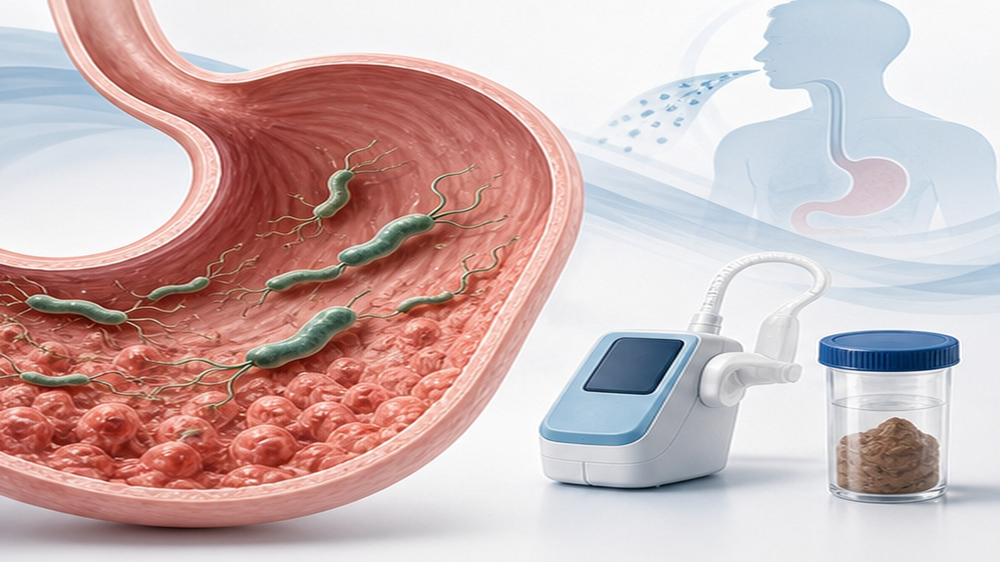
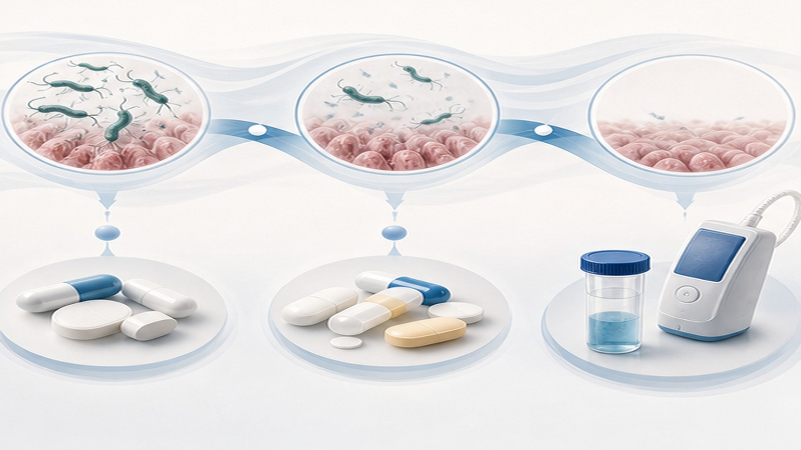

PATIENT EDUCATION · GASTROENTEROLOGY
헬리코박터 제균
치료 안내
진단부터 약물 복용·재검사까지, 제균 성공의 핵심을 한눈에
02
CHAPTER 01 · OVERVIEW
한국 성인의 약 30%
생활환경 개선으로 유병률은 감소했지만, 여전히 위암의 주요 원인입니다
30%
한국 성인 H. pylori 감염률 — 1998년 약 67%에서 지속적으로 감소했지만 여전히 높은 수준입니다.
Why eradication matters
H. pylori 감염은 위암 위험을 약 6배 높이며, WHO Group 1 발암물질로 분류됩니다.
소화성 궤양·위MALT 림프종의 주요 원인이기도 하며,
제균 치료는 위암 발생률을 의미 있게 낮춥니다.
03
CHAPTER 01 · OVERVIEW
헬리코박터란
위 점막에 사는 나선형 세균 — 강한 위산 속에서 살아남는 유일한 세균
H. pylori는 요소분해효소(urease)로 자신을 보호하면서 위 점막 깊숙이 자리잡고 만성 염증을 일으킵니다.
대부분 소아기에 감염되며 가족 내 전파가 흔합니다. 한 번 감염되면 자연 소실되지 않고 평생 지속되며, 만성 위염 → 위축성 위염 → 장상피화생 → 위암으로 이어지는 Correa cascade의 시작점입니다.
Cancer risk reduction
제균 시 약 35% ↓
메타분석에서 위암 발생률 감소 확인.
Family transmission
소아기 감염
가족 내 식기·구강 경로로 전파됩니다.
04
CHAPTER 02 · DIAGNOSIS
어떻게 진단하나요
검사 방법은 침습 유무에 따라 나뉩니다 — 한국에서는 내시경 검사 시 동시 진단이 일반적입니다
INVASIVE · 01
신속요소분해효소검사
CLO test — 내시경 시 조직을 채취해 즉시 검사. 가장 흔히 사용되며 결과를 30분~24시간 내 확인합니다.
INVASIVE · 02
조직검사
위 점막 조직을 현미경으로 관찰. 위염·위축·장상피화생 평가도 동시에 가능합니다.
INVASIVE · 03
세균 배양
항생제 감수성 검사가 가능 — 제균 실패 후 3차 치료를 결정할 때 중요합니다.
NON-INVASIVE · 04
요소호기검사
UBT — 표지된 요소를 마신 뒤 호기를 분석. 정확도 95%+, 재검사에 가장 많이 활용됩니다.
NON-INVASIVE · 05
분변 항원검사
대변에서 항원 검출. 어린이·고령자에게도 부담이 적은 검사법.
NON-INVASIVE · 06
혈청 항체검사
과거 감염도 양성으로 나오므로 현재 감염 진단에는 한계 — 치료 후 추적에는 사용하지 않습니다.

05
CHAPTER 03 · INDICATIONS
누가 치료받나요
한국 진료지침이 권고하는 제균 치료 적응증입니다
STRONG · 01
소화성 궤양
위궤양·십이지장 궤양 — 활동성·치유기 모두 제균 치료 대상. 재발률을 크게 낮춥니다.
STRONG · 02
위 MALT 림프종
조기 단계에서는 제균만으로도 관해를 유도할 수 있는 유일한 림프종.
STRONG · 03
조기위암 절제 후
EMR/ESD 후 — 이시성 위암(metachronous gastric cancer) 발생을 약 50% 감소시킵니다.
CONDITIONAL · 04
위암 가족력
직계 가족 중 위암 환자가 있는 경우 — 한국 보험 적용 대상입니다.
CONDITIONAL · 05
위축성 위염 · 장상피화생
전암성 병변. 위암 진행 위험을 낮추기 위해 제균을 권고합니다.
CONDITIONAL · 06
기타 위장관 외 적응증
특발성 혈소판감소성 자반증(ITP), 원인 불명의 철결핍성 빈혈, 환자 요청 등.
06
CHAPTER 04 · FIRST-LINE
1차 치료 — 약물 조합
한국에서는 클라리스로마이신 내성률 증가로 비스무트 사제요법이 점점 권장됩니다
OPTION · A
표준 삼제요법
- PPI표준용량 · bid
- Amoxicillin1000mg · bid
- Clarithromycin500mg · bid
7 – 14 days
OPTION · B · PREFERRED
비스무트 사제요법
- PPI표준용량 · bid
- Bismuth300mg · qid
- Tetracycline500mg · qid
- Metronidazole500mg · tid
10 – 14 days
OPTION · C
동시요법
- PPI표준용량 · bid
- Amoxicillin1000mg · bid
- Clarithromycin500mg · bid
- Metronidazole500mg · bid
7 – 10 days
07
CHAPTER 05 · SALVAGE
실패하면 다음 단계로
1차 치료 성공률은 약 70~85% — 실패해도 단계별 치료로 대부분 제균됩니다
2ND LINE · A
비스무트 사제요법
- PPIbid
- Bismuthqid
- Tetracyclineqid
- Metronidazoletid
1차에 미사용 시 우선
2ND LINE · B
레보플록사신 삼제요법
- PPIbid
- Amoxicillin1000mg · bid
- Levofloxacin500mg · qd
10 – 14 days
3RD LINE
맞춤형 치료
항생제 감수성 검사 결과를 바탕으로 약물을 선택하거나,
리파부틴(Rifabutin) 기반 요법을 고려합니다.
감수성 기반 선택

08
CHAPTER 06 · SCHEDULE
치료 일정
약 복용 종료 후 충분한 시간이 지나야 정확한 재검사가 가능합니다
1
치료 시작 · Day 1
처방받은 약물을 정해진 시간에 정확히 복용 시작. 첫날부터 음주 금지.
2
치료 종료 · Day 10–14
한 알도 빼먹지 않고 끝까지 복용. 부작용이 있어도 자가 중단 금지 — 진료실로 연락.
3
검사 대기 · ≥ 4주
PPI는 최소 2주 중단 후 재검사. 너무 빠르면 위음성이 나올 수 있습니다.
4
제균 확인 · UBT
요소호기검사 또는 분변 항원검사로 제균 여부 확인. 양성이면 2차 치료 검토.
09
CHAPTER 07 · PRECAUTIONS
복용 시 주의사항
제균 성공의 가장 큰 변수는 복약 순응도 — 처방 그대로 복용하세요
RULE · 01
정해진 시간에 복용
PPI는 식사 30분 전, 항생제는 식사 직후 또는 함께. 복용 간격을 최대한 일정하게 유지하세요.
RULE · 02
절대 음주 금지
메트로니다졸 + 알코올은 안타뷰스 반응(심한 두근거림·구토·홍조)을 일으킵니다. 약 종료 후 48시간까지 금주.
RULE · 03
한 알도 빼먹지 않기
불완전 복용은 항생제 내성을 만들어 다음 치료까지 어렵게 합니다. 잊었다면 즉시 진료실에 문의하세요.
RULE · 04
증상 호전돼도 지속
속이 편해졌다고 임의 중단하지 마세요. 처방된 기간 끝까지 복용해야 제균이 완성됩니다.
중요
심한 설사·발진·호흡곤란·황달이 발생하면 즉시 약을 중단하고 내원하세요. 자가 판단으로 일반 지사제를 복용하지 않습니다.
10
CHAPTER 08 · SIDE EFFECTS
흔한 부작용
대부분 가벼우며 치료 종료와 함께 사라집니다 — 미리 알고 있으면 당황하지 않습니다
COMMON · 01
메스꺼움 · 식욕저하
가장 흔한 부작용. 식사와 함께 복용하면 완화됩니다.
COMMON · 02
설사 · 복부 불편감
항생제 영향. 보통 가볍지만, 물설사가 하루 6회 이상이면 진료실에 알려주세요.
COMMON · 03
입맛 이상 · 쇠 맛
클라리스로마이신·메트로니다졸 특유. 일시적이며 약을 끊으면 회복됩니다.
COMMON · 04
검은 변
비스무트 복용 시 흔히 나타나는 정상 반응. 출혈성 흑색변과 구분됩니다.
COMMON · 05
두통 · 어지러움
대개 며칠 내 완화. 심하면 처방 변경을 고려합니다.
RED FLAG · 06
발진 · 가려움
아목시실린·테트라사이클린 알레르기 가능. 전신 발진이면 즉시 중단·내원.
11
CHAPTER 09 · ACTION
치료 기간 동안 지킬 7가지
단순한 규칙이지만 제균 성공률을 결정짓는 요소들입니다
01
처방받은 약을 정해진 시간에 정확히 복용
02
치료 기간 동안 완전히 금주 (종료 후 48시간까지)
03
증상이 좋아져도 임의 중단 금지
04
한 번 빼먹으면 즉시 진료실 문의
05
치료 후 4주 이상 지나서 재검사 예약
06
재검사 전 PPI 2주 중단 (의사 지시)
07
가족도 검사·치료 함께 검토 권장
→
한 번에 끝내는 것이 가장 효율적입니다
END OF DECK · THANK YOU
한 번에 끝내는
철저한 제균
약물 복용·생활관리·재검사 — 작은 규칙이 큰 결과를 만듭니다.
Phone
031-893-4560
Address
경기 용인 수지구
광교중앙로 298, 4층
광교중앙로 298, 4층
Specialty
소화기내과 · 일반내과
5대암 검진
5대암 검진
SCAN TO REVISIT
집에서 다시 보기
QR을 스캔하면 핸드폰에서
같은 자료를 다시 볼 수 있어요
같은 자료를 다시 볼 수 있어요